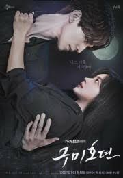
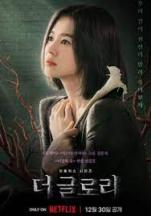

Топ 5 популярних корейських дорам:
Чудовий слух
Дораму ''Чудовий слух'' знято за мотивами однойменного вебтуна та розповідає історію ловців злих духів, об'єднаних у команду під назвою "Counter".Ключовим персонажем стає старшокласник Со Мун, який у дитинстві втратив батьків в автомобільній аварії та сильно пошкодив ногу, внаслідок чого тепер сильно кульгає. Однак післ одного інциденту хлопець відкриває у собі дивовижні здібності та приєднується до ловців.
Натисни на картинку, щоб дивитись.
K2
Колишній найманець під кодовим ім'ям К2 був відданий своїм і змушений ховатися від влади.Він вступає в гру брудних на руку політиків, щоб знайти і покарати головного винуватця свого плачевного становища. На кін поставлене життя молодої дівчини, дочки нинішнього президента Кореї, яку власна сім'я утримує від громадської. К2 повинен розібратися з лиходіями і врятувати безневинну пустельницю від уготованої їй долі.
Натисни на картинку, щоб дивитись.
Щастя
Сюжет дорами ''Щастя'' розгорається довкола дівчини на ім'я Юн Се Бом, яка лише переїхала до нової квартири. Незабаром цей житловий комплекс виявиться відрізаним від світу через нове інфекційне захворювання. Детектив Чон І Хен, прийняв несподівану і, варто сказати, дуже дивну пропозицію від Се Бом, яка була його шкільною любов'ю, теж виявляється втягнутою у кругооьіг небезпечних подій. Чи зможуть герої допомогти один одному впоратися з цією непростою ситуацією, дізнаємось, подивившись дораму.
Натисни на картинку, щоб дивитись.
Легенда про Куміхо

Симпатичне мелодраматичне фентезі, про тисячорічних демонів, які несподівано для себе потрапляють до популярного реаліті-шоу.
Куміхо – демон-лисиця з дев'ятьма хвостами на ім'я Лі Йон зрікся своєї позиції гірського духу Бекдудеегана, щоб шукати реінкарнацію своєї єдиної справжньої любові Ах-Еум. Він прослідкував за її душею до річки Самдо і дав їй лисячий бісер як знак, що дозволить йому її відшукати коли вона знову відродиться. Тим часом його зведений брат Лі Ранг залишився сам і зненавидів людство. Через тисячу років вони зустрінуться знову, в наші дні, аби боротись за кохання та людство...
Серіал «Легенда про Куміхо» (2020) буде цікаво дивитись українською онлайн усім шанувальникам фентезі.
Натисни на картинку, щоб дивитись.
Слава
 Мун Дон Ин росла майже на самоті, кинута батьком і не потрібна матері. Без захисту та грошей дівчинка стала жертвою шкільного насильства, її, і без того важке, життя перетворилося на пекло через Пак Ен Джин. Дівчина та її друзі, що народилися в багатих сім'ях, жили приспівуючи і нічого не боялися, вони мучили Дон Ин і так само спокійно мріяли про кар'єру та сім'ю, у той час як мрією Дон Ин стала Пак Ен Джин. Не було жодного дня, щоб вона не згадувала її ім'я. Довго та ретельно планує вона план помсти для неї та всіх, хто заплющував очі на її страждання. І коли дочка Пак Ен Джин переходить до молодшої школи, Мун Дон Ін стає її вчителькою і починає реалізацію свого плану. А закоханий у неї Чу Ё Чжон стає знаряддям цієї помсти.Натисни на картинку, щоб дивитись.